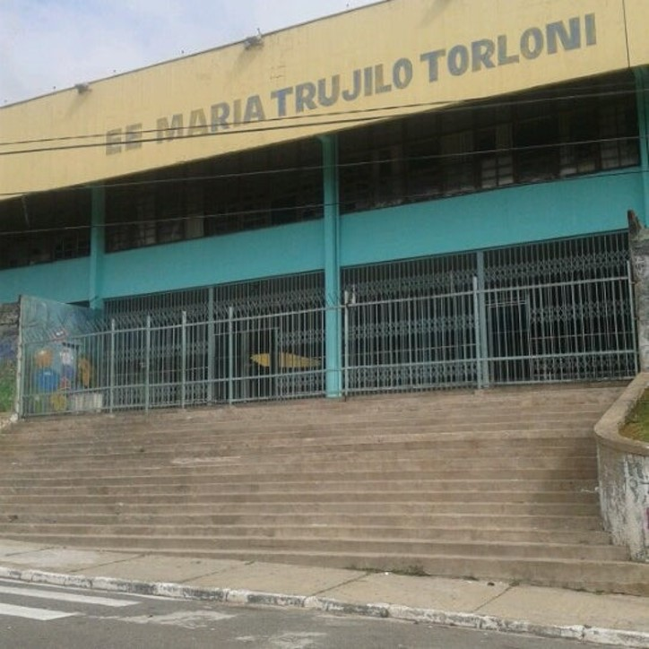
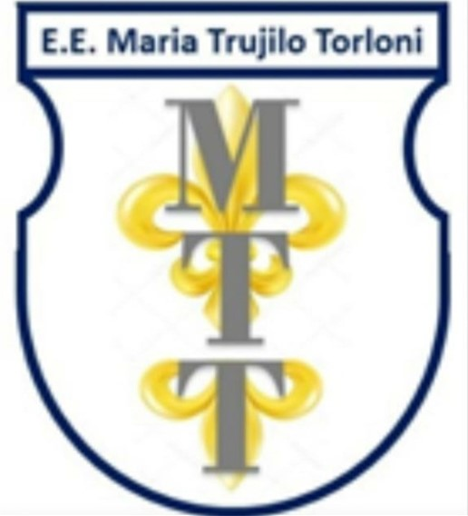

E.E.MARIA TRUJILO TORLONI

A Escola Estadual Maria Trujilo Torloni está situada no bairro São José em São Caetano do Sul, foi inaugurada em 1968.
Hoje a escola integra o grupo das Escolas PEI – Programa de Ensino Integral da Secretaria da Educação do Estado de São Paulo.
E diariamente a equipe escolar busca com empenho e dedicação fazer a diferença na vida de seus alunos.
Dupla Participante da Cyberpedagogia 2021
Professor Gilmar Albuquerque da Silva
Professor Elvis Mantuani
ESCUDO HERÁLDICO
Elaborado pelos Alunos do Torloni

Uma Equipe - Uma Família
Gilmar o Físico
Elvis o Químico
Equipe E.E.Maria Trujilo Torloni
Levando a Educação a Sério